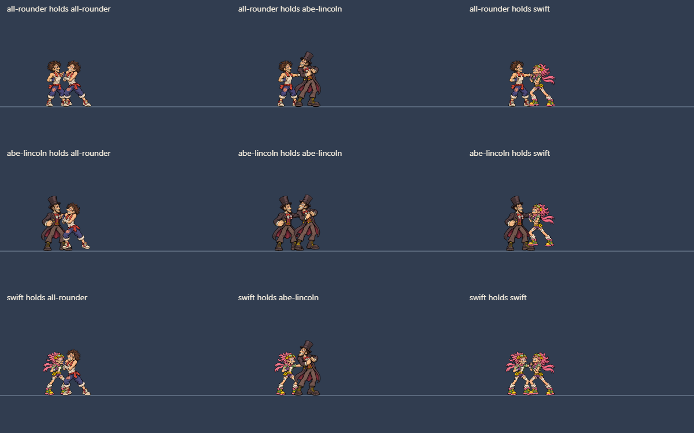

126 selected holder/ledge anchors checked against source alpha; 20 manually guided hand anchors corrected across five clips. Proximity to opaque pixels is a diagnostic, not proof of anatomically correct contact.
All animations and attack poses at gameplay/distant scale · Broader polish audit
Distances are world pixels to the nearest opaque source pixel, before/after. Hand locations were selected from inspected artwork, not blindly snapped to any opaque body part. Swift ledge-hang column offsets, Lincoln catch/hold/pummel hand positions and Swift forward-throw approach hand points were corrected. Ledge root registration follows the corrected grip.
| Fighter / clip / frame | Previous | Current |
|---|---|---|
| abe-lincoln / grab_hold / 1 | 0.084 | 0.044 |
| abe-lincoln / grab_hold / 2 | 4.733 | 0.09 |
| abe-lincoln / grab_hold / 3 | 0.084 | 0.019 |
| abe-lincoln / grab_hold / 4 | 3.862 | 0.033 |
| abe-lincoln / pummel / 1 | 0.11 | 0.089 |
| abe-lincoln / pummel / 2 | 3.19 | 0.038 |
| abe-lincoln / pummel / 3 | 3.317 | 0.067 |
| abe-lincoln / pummel / 4 | 0.11 | 0.062 |
| abe-lincoln / pummel / 5 | 3.19 | 0.108 |
| abe-lincoln / pummel / 6 | 3.317 | 0.038 |
| abe-lincoln / ledge_catch / 1 | 0.018 | 0.049 |
| abe-lincoln / ledge_catch / 2 | 1.806 | 0.098 |
| abe-lincoln / ledge_catch / 3 | 0.131 | 0.074 |
| abe-lincoln / ledge_catch / 4 | 3.699 | 0.067 |
| swift / forward_throw / 1 | 4.141 | 0.086 |
| swift / forward_throw / 2 | 3.682 | 0.033 |
| swift / ledge_hang / 1 | 0.064 | 0.064 |
| swift / ledge_hang / 2 | 6.478 | 0.048 |
| swift / ledge_hang / 3 | 0.256 | 0.037 |
| swift / ledge_hang / 4 | 6.957 | 0.06 |
These points need contextual playback review. An open hand can contain transparent space, and a proximity score does not identify fingers, cloth or anatomy. Released throw recovery anchors are excluded because they do not hold the victim.
| Fighter / clip / frame | Previous | Current |
|---|
All attacker/victim combinations captured at 1x sprite scale, without enlarging the fighter drawings. The individual pages provide enlarged detail.

All 408 clips remain available. This pass changes five clips of contact metadata; 403 clips and every source image are unchanged. No gameplay collision, throw trajectory or frame-data values change. Contact and palette signoff are still visual decisions; source colors were preserved. Effects, duplicate-fighter identification, atlas optimization and final engine parity remain separate work.